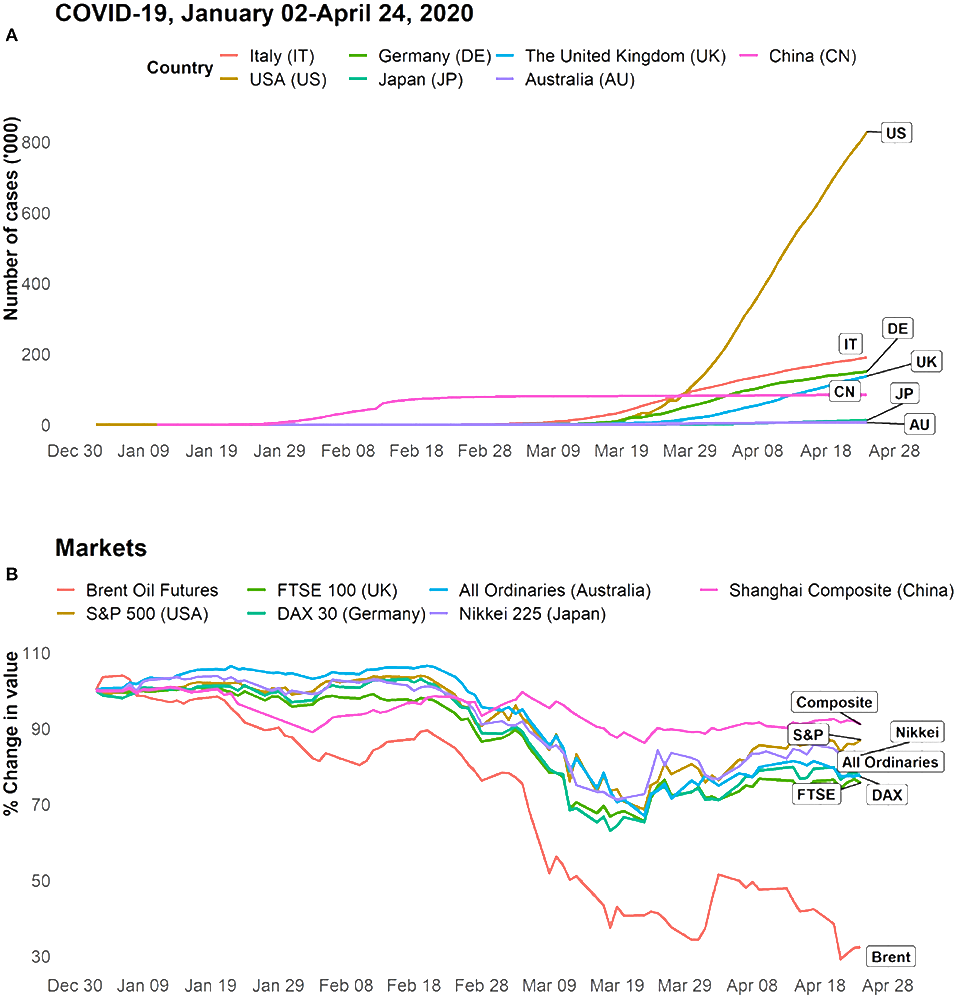

<!DOCTYPE html>
<html lang="en">
  <head>
    <title>Reports</title>
    <meta charset="UTF-8" />
    <meta http-equiv="X-UA-Compatible" content="IE=edge" />
    <meta name="viewport" content="width=device-width, initial-scale=1.0" />
    <!-- fontawesome -->
    <link
      rel="stylesheet"
      href="https://pro.fontawesome.com/releases/v6.0.0-beta3/css/all.css"
    />
    <link rel="stylesheet" href="fontawsome/all.min.css" />
    <!-- Favicon -->
    <link rel="shortcut icon" href="images/SVG/article.svg" type="image/x-icon" />
    <!-- google fonts -->
    <link rel="preconnect" href="https://fonts.googleapis.com" />
    <link rel="preconnect" href="https://fonts.gstatic.com" crossorigin />
    <link
      href="https://fonts.googleapis.com/css2?family=Montserrat:ital,wght@0,100;0,200;0,300;0,400;0,500;0,600;0,700;0,800;0,900;1,100;1,200;1,300;1,400;1,500;1,600;1,700;1,800;1,900&display=swap"
      rel="stylesheet"
    />
    <!-- Normalize css -->
    <link rel="stylesheet" href="normalize/normalize.css" />
    <!-- Style Css -->
    <link rel="stylesheet" href="css/mainCss.css" />
    <!-- Reports Style -->
    <link rel="stylesheet" href="css/reportsStyle.css" />
  </head>

  <body>
    <div class="over"></div>
    <div class="reminder">
      
      <h4 class="dont">Don't Forget to wear a mask</h4>
    </div>
    <div class="over"></div>
    <aside class="nav-bar active">
      <div class="cov">
        
        <h1 class="nav-head">COVID-19</h1>
      </div>
      <div class="ic-cont">
        <div class="arrow">
          <svg
            class="arr"
            xmlns="http://www.w3.org/2000/svg"
            height="48"
            width="48"
            fill="white"
          >
            <path
              d="m24 40-2.1-2.15L34.25 25.5H8v-3h26.25L21.9 10.15 24 8l16 16Z"
            />
          </svg>
        </div>
        <div class="main-taps">
          <a class="tap-1" href="index.html" target="_self">
            <svg xmlns="http://www.w3.org/2000/svg" height="48" width="48">
              <path
                d="M8 42V18L24.1 6 40 18v24H28.3V27.75h-8.65V42Zm3-3h5.65V24.75H31.3V39H37V19.5L24.1 9.75 11 19.5Zm13-14.65Z"
              />
            </svg>
            <h3>Home</h3>
          </a>
          <a class="tap-2" href="symptoms.html" target="_self">
            <svg xmlns="http://www.w3.org/2000/svg" height="48" width="48">
              <path
                d="M4.25 20.75Q5.4 13.6 10.975 8.8 16.55 4 24 4q3.75 0 7.05 1.275T37 8.8q-.5.85-.825 1.525-.325.675-.525 1.275-2.3-2.15-5.275-3.375Q27.4 7 24 7q-5.6 0-9.95 3.2t-6.1 8.2q-1.1.25-2.05.825-.95.575-1.65 1.525ZM24 44q-7.45 0-13.025-4.825T4.25 27.2q.65 1 1.6 1.6.95.6 2.1.85 1.75 5 6.125 8.175Q18.45 41 24 41q7.1 0 12.05-4.975Q41 31.05 41 24q0-.85-.1-1.7t-.25-1.7q.35.1.675.125.325.025.675.025.45 0 .875-.05t.825-.15q.15.85.225 1.7Q44 23.1 44 24q0 4.1-1.575 7.75-1.575 3.65-4.275 6.375t-6.35 4.3Q28.15 44 24 44Zm-7.2-21.15L20.65 19l-3.9-3.9L15 16.85l2.15 2.1L15 21.1Zm25.2-5.1q-1.55 0-2.65-1.1-1.1-1.1-1.1-2.65 0-1.3.675-2.7Q39.6 9.9 42 6.45q2.4 3.45 3.075 4.85.675 1.4.675 2.7 0 1.55-1.1 2.65-1.1 1.1-2.65 1.1ZM31.25 22.9l1.8-1.8-2.15-2.15 2.1-2.1-1.75-1.75-3.9 3.9ZM24 27.15q-1.3 0-2.55.3-1.25.3-2.4.9l-7.3-4.2q0-.8-.35-1.475t-1-1.075q-1-.55-2.1-.275T6.6 22.6q-.55 1-.25 2.1.3 1.1 1.3 1.7.7.4 1.425.35.725-.05 1.425-.45l6.25 3.65q-.9.85-1.625 1.85T13.9 34h2.65q1.1-2.1 3.125-3.25t4.375-1.15q2.35 0 4.325 1.15T31.5 34h2.6q-1.25-3.1-4-4.975-2.75-1.875-6.1-1.875ZM24 24Z"
              />
            </svg>
            <h3>Symptoms</h3>
          </a>
          <a class="tap-3" href="medicalPage.html" target="_self">
            <svg xmlns="http://www.w3.org/2000/svg" height="40" width="40">
              <path
                d="M11.958 30h2.75v-3.625h3.625v-2.75h-3.625V20h-2.75v3.625H8.333v2.75h3.625Zm9.709-6.125h10v-1.917h-10Zm0 5h6.666v-1.917h-6.666ZM6.125 36.667q-1.125 0-1.958-.834-.834-.833-.834-1.958V14.458q0-1.125.834-1.958.833-.833 1.958-.833h9.333V6.125q0-1.125.834-1.958.833-.834 1.958-.834h3.542q1.125 0 1.937.834.813.833.813 1.958v5.542h9.333q1.125 0 1.958.833.834.833.834 1.958v19.417q0 1.125-.834 1.958-.833.834-1.958.834Zm0-2.792h27.75V14.458h-9.333q0 1.209-.834 1.98-.833.77-2.083.77h-3.25q-1.208 0-2.063-.77-.854-.771-.854-1.98H6.125v19.417ZM18.25 14.458h3.542V6.125H18.25ZM20 24.167Z"
              />
            </svg>
            <h3>Medical Test</h3>
          </a>
          <a class="tap-4" href="#" target="_self">
            <svg xmlns="http://www.w3.org/2000/svg" height="40" width="40">
              <path
                d="M6.125 35q-1.167 0-1.979-.812-.813-.813-.813-1.98V5l2.792 2.792L8.875 5l2.792 2.792L14.458 5l2.75 2.792L20 5l2.792 2.792L25.542 5l2.791 2.792L31.125 5l2.75 2.792L36.667 5v27.208q0 1.167-.813 1.98-.812.812-1.979.812Zm0-2.792h12.5V21.125h-12.5v11.083Zm15.25 0h12.5v-4.166h-12.5Zm0-6.916h12.5v-4.167h-12.5Zm-15.25-6.959h27.75v-5H6.125Z"
              />
            </svg>
            <h3>Reposts</h3>
          </a>
          <a class="tap-5" href="AboutUs.html" target="_self">
            <svg xmlns="http://www.w3.org/2000/svg" height="48" width="48">
              <path
                d="M0 36v-2.65q0-1.95 2.1-3.15T7.5 29q.65 0 1.2.025.55.025 1.1.125-.4.85-.6 1.725-.2.875-.2 1.875V36Zm12 0v-3.25q0-3.25 3.325-5.25t8.675-2q5.4 0 8.7 2 3.3 2 3.3 5.25V36Zm27 0v-3.25q0-1-.175-1.875t-.575-1.725q.55-.1 1.1-.125Q39.9 29 40.5 29q3.4 0 5.45 1.2Q48 31.4 48 33.35V36Zm-15-7.5q-4 0-6.5 1.2T15 32.75V33h18v-.3q0-1.8-2.475-3T24 28.5Zm-16.5-1q-1.45 0-2.475-1.025Q4 25.45 4 24q0-1.45 1.025-2.475Q6.05 20.5 7.5 20.5q1.45 0 2.475 1.025Q11 22.55 11 24q0 1.45-1.025 2.475Q8.95 27.5 7.5 27.5Zm33 0q-1.45 0-2.475-1.025Q37 25.45 37 24q0-1.45 1.025-2.475Q39.05 20.5 40.5 20.5q1.45 0 2.475 1.025Q44 22.55 44 24q0 1.45-1.025 2.475Q41.95 27.5 40.5 27.5ZM24 24q-2.5 0-4.25-1.75T18 18q0-2.55 1.75-4.275Q21.5 12 24 12q2.55 0 4.275 1.725Q30 15.45 30 18q0 2.5-1.725 4.25T24 24Zm0-9q-1.25 0-2.125.85T21 18q0 1.25.875 2.125T24 21q1.3 0 2.15-.875Q27 19.25 27 18q0-1.3-.85-2.15Q25.3 15 24 15Zm0 18Zm0-15Z"
              />
            </svg>
            <h3>About us</h3>
          </a>
        </div>
      </div>
    </aside>
    <main class="container">
      <div class="tit-cont">
        <span class="stay-safe">Stay safe , Stay Healthy</span>
        
        <h3 class="breaking">Breaking Space</h3>
      </div>

      <ul class="rep-taps">
        <li class="rep-active" data-cont=".rep-one">vaccine</li>
        <li data-cont=".rep-two">COVID-19 condition</li>
        <li data-cont=".rep-three">Covid-19 and the Economy</li>
      </ul>
      <div class="container">
        <div class="content">
          <div class="rep-one">
            <h4 class="heads">Effectiveness:</h4>
            <h5 class="small-heads">Pfizer Effectiveness</h5>
            <p>
              91% effective at preventing severe illness with the coronavirus
              disease 2019 (COVID-19) virus in people age 16 and older Greater
              than 89% effective in preventing people with health conditions,
              such as diabetes or obesity, from developing the COVID-19 virus
              with symptoms 100% effective at preventing the COVID-19 virus in
              children ages 12 through 15 91% effective in preventing the
              COVID-19 in children ages 5 through 11 Appears to protect against
              severe COVID-19 due to
              <a
                href="https://www.mayoclinic.org/coronavirus-covid-19/covid-variant-vaccine"
                target="_blank"
              >
                COVID-19 variants
              </a>
            </p>
            <h4 class="heads">Modern Effectiveness</h4>
            <p>
              94% effective at preventing the COVID-19 virus with symptoms
              Greater than 90% effective in preventing people with health
              conditions, such as diabetes or obesity, from developing the
              COVID-19 virus with symptoms Appears to protect against severe
              COVID-19 due to
              <a
                href="https://www.mayoclinic.org/coronavirus-covid-19/covid-variant-vaccine"
                target="_blank"
              >
                COVID-19 variants
              </a>
            </p>
            <h4 class="heads">Janssen/Johnson & Johnson Effectiveness</h4>
            <p>
              66% effective at preventing the COVID-19 virus with symptoms 85%
              effective at preventing the COVID-19 virus with severe illness
              Appears to protect against severe COVID-19 due to
              <a
                href="https://www.mayoclinic.org/coronavirus-covid-19/covid-variant-vaccine"
                target="_blank"
              >
                COVID-19 variants
              </a>
            </p>
            <h4 class="heads">Novavax Effectiveness</h4>
            <p>
              90% effective at preventing mild, moderate and severe illness with
              the coronavirus disease 2019 (COVID-19) virus in people age 18 and
              older 79% effective in people age 65 and older Appears to protect
              against severe COVID-19 due to
              <a
                href="https://www.mayoclinic.org/coronavirus-covid-19/covid-variant-vaccine"
                target="_blank"
              >
                COVID-19 variants
              </a>
            </p>
            <h4 class="heads">Doses:</h4>
            <h5 class="small-heads">Pfizer Doses</h5>
            <p>
              Two doses are needed, 21 days apart (or up to six weeks apart, if
              needed) in the U.S. Three doses are needed for age 6 months
              through age 4, with the first two shots given 3 to 8 weeks apart
              and the third shot at least eight weeks after the second shot Some
              protection provided after the first dose The CDC recommends an
              additional primary shot of an mRNA COVID-19 vaccine (at least 28
              days after the second dose) for some people age 5 and older with
              weakened immune systems, such as those who have had an organ
              transplant. People with weakened immune systems might not develop
              enough immunity after vaccination with two doses of an mRNA
              COVID-19 vaccine. An additional primary shot might improve their
              protection against the COVID-19 virus. Kids age 5 through 11 can
              get a Pfizer-BioNTech booster dose based off the original viral
              strain, called a monovalent booster. Kids can get a booster if
              it's been at least five months since the last COVID-19 vaccine
              shot. People age 12 to 17 who had all recommended doses of a
              COVID-19 vaccine can only get the Pfizer-BioNTech COVID-19
              updated, or bivalent, booster at least two months after their last
              shot. People who are ages 18 and older who have had all
              recommended doses of a COVID-19 vaccine may get either the Pfizer
              or Moderna mRNA COVID-19 bivalent booster at least two months
              after their last shot. Kids ages 5 through 11 who have a weakened
              immune system should get a monovalent Pfizer-BioNTech COVID-19
              vaccine booster shot if they have been given both doses of the
              Pfizer-BioNTech COVID-19 vaccine and it’s been at least three
              months since the additional primary shot. People age 12 to 17 who
              have a weakened immune system and have had all recommended doses
              of a COVID-19 vaccine can get an updated, or bivalent, booster
              dose of the Pfizer-BioNTech COVID-19 vaccine at least two months
              after the last shot. People age 18 and older who have a weakened
              immune system and have had all recommended doses of a COVID-19
              vaccine can get a bivalent booster dose of either of the mRNA
              COVID-19 bivalent boosters at least two months after the last
              shot.
            </p>
            <h4 class="heads">Modern Doses</h4>
            <p>
              Two doses are needed for ages 18 and up, 28 days apart (or up to
              six weeks apart, if needed) in the U.S. Two doses are needed for
              ages 6 months through age 17, four to eight weeks apart Some
              protection provided after the first dose The CDC recommends an
              additional primary shot of an mRNA COVID-19 vaccine (at least 28
              days after the second dose) for some people with weakened immune
              systems, such as those who have had an organ transplant. People
              with weakened immune systems might not develop enough immunity
              after vaccination with two doses of an mRNA COVID-19 vaccine. An
              additional primary shot might improve their protection against the
              COVID-19 virus. People ages 12 to 17 who had all recommended doses
              of a COVID-19 vaccine can only get the Pfizer-BioNTech COVID-19
              updated, or bivalent, booster at least two months after their last
              shot. People who are ages 18 and older who had one of the COVID-19
              vaccines may get either the Moderna or Pfizer-BioNTech COVID-19
              bivalent booster at least two months after their last shot. If you
              are 12 to 17 and have a weakened immune system, had all
              recommended doses of a COVID-19 vaccine, and it’s been at least
              two months since the additional shot, you can only get an updated,
              or bivalent, booster dose of the Pfizer-BioNTech COVID-19 vaccine.
              People age 18 and older who have a weakened immune system and have
              had all recommended doses of a COVID-19 vaccine can get a bivalent
              booster dose of either of the Pfizer-BioNTech or Moderna mRNA
              COVID-19 bivalent boosters at least two months after the last
              shot.
            </p>
            <h4 class="heads">Janssen/Johnson & Johnson Doses</h4>
            <p>
              One dose is needed Some protection provided two weeks after
              vaccination There isn’t enough research to determine if people
              with weakened immune systems who got a Janssen/Johnson & Johnson
              COVID-19 vaccine have an improved response after getting an
              additional dose of the same vaccine. If you are age 18 or older,
              and got the Janssen/Johnson & Johnson COVID19 vaccine, you can get
              either the Pfizer-BioNTech or Moderna mRNA bivalent booster doses
              at least two months after your shot. People age 18 and older who
              have a weakened immune system and have had all recommended doses
              of the COVID-19 vaccines can get either the Pfizer-BioNTech or
              Moderna mRNA COVID-19 bivalent boosters at least two months after
              the last shot.
            </p>
            <h4 class="heads">Novavax Doses</h4>
            <p>
              Two doses are needed for ages 12 and up, 3 to 8 weeks apart in the
              U.S. People ages 12 to 17 who had all recommended doses of a
              COVID-19 vaccine can only get the Pfizer-BioNTech COVID-19
              updated, or bivalent, booster at least two months after their last
              shot. People who are ages 18 and older who had one of the COVID-19
              vaccines may get either the Moderna or Pfizer-BioNTech COVID-19
              bivalent booster at least two months after their last shot.
            </p>
            <h4 class="heads">Side effects:</h4>
            <h5 class="small-heads">Pfizer Side effects</h5>
            <p>
              Injection site pain, fatigue, headache, muscle pain, chills, joint
              pain, fever, nausea, feeling unwell and swollen lymph nodes Note:
              Rarely, some people have had heart problems after getting a mRNA
              COVID-19 vaccine. Seek medical care if you have chest pain,
              shortness of breath or feelings of having a fast-beating,
              fluttering or pounding heart within a week of getting the vaccine.
            </p>
            <h4 class="heads">Moderna Side effects</h4>
            <p>
              Injection site pain, fatigue, headache, muscle pain, chills, joint
              pain, fever, nausea, feeling unwell and swollen lymph nodes Note:
              Rarely, some people have had heart problems after getting a mRNA
              COVID-19 vaccine. Seek medical care if you have chest pain,
              shortness of breath or feelings of having a fast-beating,
              fluttering or pounding heart within a week of getting the vaccine.
            </p>
            <h4 class="heads">Janssen/Johnson & Johnson Side effects</h4>
            <p>
              Injection site pain, fatigue, headache, muscle pain, chills, fever
              and nausea Note: If you received this vaccine within the last
              three weeks and are experiencing any unexplained new severe
              symptoms, seek emergency care. Use of the Janssen/Johnson &
              Johnson COVID-19 vaccine might increase the risk of a rare and
              serious blood clotting disorder. Nearly all of those affected have
              been women ages 18 to 49. As a result, the CDC recommends getting
              an mRNA COVID-19 vaccine over getting the Janssen/Johnson &
              Johnson COVID-19 vaccine. Research suggests there isn’t an
              increased risk for this disorder after mRNA COVID-19 vaccination.
              Possible severe symptoms include shortness of breath, persistent
              stomach pain, severe or persistent headache, blurred vision, chest
              pain, leg swelling, easy bruising, and tiny red spots on the skin.
              Rarely, some people may develop Guillain-Barre syndrome after
              getting the vaccine. Seek immediate medical care if you have
              weakness or tingling sensations, difficulty walking, difficulty
              with facial movements, double vision, and difficulty with bladder
              control.
            </p>
            <h4 class="heads">Novavax Side effect</h4>
            <p>
              Injection site pain, fatigue, headache, muscle pain, chills, joint
              pain, fever, nausea, feeling unwell and swollen lymph nodes
            </p>
            <h4 class="heads">Authorization and safety:</h4>
            <h5 class="small-heads">Pfizer Authorization and safety</h5>
            <p>
              U.S. Food and Drug Administration (FDA) approval for people age 12
              and older for Pfizer BioNTech, now called Comirnaty FDA emergency
              use authorization for people age 6 months to 11 Safety closely
              monitored by the U.S. Centers for Disease Control and Prevention
              (CDC) and FDA
            </p>
            <h4 class="heads">Moderna Authorization and safety</h4>
            <p>
              FDA approval for people 18 and older for Moderna COVID-19 vaccine,
              now called Spikevax. FDA emergency use authorization for children
              ages 6 months through 17 years old Safety closely monitored by the
              CDC and FDA
            </p>
            <h4 class="heads">
              Janssen/Johnson & Johnson Authorization and safety
            </h4>
            <p>
              FDA emergency use authorization Continues to be recommended by the
              FDA and CDC after a pause because the benefits outweigh the risks
              Safety closely monitored by the CDC and FDA
            </p>
            <h4 class="heads">Novavax Authorization and safety</h4>
            <p>
              FDA emergency use authorization for people age 12 and older Safety
              closely monitored by the U.S. Centers for Disease Control and
              Prevention (CDC) and FDA
            </p>
            <h4 class="heads">Eligibility:</h4>
            <h5 class="small-heads">Pfizer Eligibility</h5>
            <p>
              People age 6 months and older can get the vaccine People who've
              had an immediate or severe allergic reaction to any of the
              vaccine's ingredients or after a prior dose of the vaccine and
              people who are allergic to polysorbate shouldn't get the vaccine
              People who've had an immediate allergic reaction to any vaccine or
              injectable medication should be cautious about getting the vaccine
            </p>
            <h4 class="heads">Moderna Eligibility</h4>
            <p>
              People age 6 months and older can get the vaccine People who've
              had an immediate or severe allergic reaction to any of the
              vaccine's ingredients or after a prior dose of the vaccine and
              people who are allergic to polysorbate shouldn't get the vaccine
              People who've had an immediate allergic reaction to any vaccine or
              injectable medication should be cautious about getting the vaccine
            </p>
            <h4 class="heads">Janssen/Johnson & Johnson Eligibility</h4>
            <p>
              People age 18 and older can get the vaccine People who've had a
              severe allergic reaction to any of the vaccine's ingredients
              shouldn't get the vaccine
            </p>
            <h4 class="heads">Novavax Eligibility</h4>
            <p>
              People age 12 and older can get the vaccine People who've had an
              immediate allergic reaction to any vaccine or injectable
              medication should be cautious about getting the vaccine
            </p>
            <h4 class="heads">Existing health conditions:</h4>
            <h5 class="small-heads">Pfizer Existing health conditions</h5>
            <p>
              You can get a vaccine if you have an existing health condition or
              if you're pregnant or breastfeeding. If you have existing health
              conditions, take medications, or you're pregnant, and you have
              questions about the vaccine, talk to your doctor. If you have any
              other questions or concerns about getting the COVID-19 vaccine,
              talk to your doctor.
            </p>
            <h4 class="heads">Moderna Existing health conditions</h4>
            <p>
              You can get a vaccine if you have an
              <a
                href="https://www.mayoclinic.org/diseases-conditions/coronavirus/in-depth/coronavirus-vaccine/art-20484859#underlying-condition"
                target="_blank"
              >
                existing health condition
              </a>
              or if you're
              <a
                href="https://www.mayoclinic.org/diseases-conditions/coronavirus/in-depth/coronavirus-vaccine/art-20484859#pregnant-breastfeeding"
                target="_blank"
              >
                pregnant or breastfeeding </a
              >. If you have existing health conditions, take medications, or
              you're pregnant, and you have questions about the vaccine, talk to
              your doctor. If you have any other
              <a
                href="https://www.mayoclinic.org/diseases-conditions/coronavirus/in-depth/coronavirus-vaccine/art-20484859"
                target="_blank"
              >
                questions or concerns about getting the COVID-19 vaccine </a
              >, talk to your doctor.
            </p>
            <h4 class="heads">
              Janssen/Johnson & Johnson Existing health conditions
            </h4>
            <p>
              You can get a vaccine if you have an existing health condition or
              if you're pregnant or breastfeeding. If you have existing health
              conditions, take medications, or you're pregnant, and you have
              questions about the vaccine, talk to your doctor. If you have any
              other questions or concerns about getting the COVID-19 vaccine,
              talk to your doctor.
            </p>
            <h4 class="heads">Novavax Existing health conditions</h4>
            <p>
              You can get a vaccine if you have an existing health condition or
              if you're pregnant or breastfeeding. If you have existing health
              conditions, take medications, or you're pregnant, and you have
              questions about the vaccine, talk to your doctor. If you have any
              other questions or concerns about getting the COVID-19 vaccine,
              talk to your doctor.
            </p>
          </div>
          <div class="rep-two">
            <h4 class="heads">COVID-19 condition</h4>
            <p>
              also known as “long COVID,” refers collectively to the
              constellation of long-term symptoms that some people experience
              after they have had COVID-19. People who experience post COVID-19
              condition sometimes refer to themselves as “longhaulers.” While
              most people who develop COVID-19 fully recover, some people
              develop a variety of mid- and long-term effects like fatigue,
              breathlessness and cognitive dysfunction (for example, confusion,
              forgetfulness, or a lack of mental focus and clarity). Some people
              also experience psychological effects. COVID-19 condition can
              affect a person’s ability to perform daily activities such as work
              or household chores.
            </p>
            <h4 class="heads">The most common symptoms:</h4>
            <ul class="symptoms">
              <li>Shortness of breath or difficulty breathing</li>
              <li>Memory, concentration or sleep problems</li>
              <li>Chest pain</li>
              <li>Persistent cough</li>
              <li>Trouble speaking</li>
              <li>Muscle aches</li>
              <li>Loss of smell or taste</li>
              <li>Depression or anxiety</li>
              <li>Fever</li>
            </ul>
            <p>
              In the ONS survey, most (67%) of those with self-reported long
              COVID reported that their symptoms adversely affect their
              day-to-day activities. That is 1.1 million people in all, and
              322,000 (19%) of them reported that their ability to undertake
              day-to-day activities had been "limited a lot". Fatigue was the
              most common symptom, reported by half (51%) of those with
              self-reported long COVID. Shortness of breath followed (in 34%),
              then loss of smell (28%), and muscle ache (24%). As a proportion
              of the UK population, the prevalence of self-reported long COVID
              was greatest in people aged 35 to 49 years, females, people living
              in more deprived areas, those working in social care, teaching and
              education or health care, and those with another health condition
              or disability that limits activity
            </p>
            <h4 class="heads">Long covid poll</h4>
            <p>
              The scale of chronic ill health and disability after COVID-19 has
              been described as the next big global health challenge. Persistent
              COVID-19 symptoms are common. In March 2022, the ONS survey found
              1.7m people were experiencing long COVID. As Figure 1 shows, the
              numbers are rising rapidly <br />
              1.7 million people were experiencing self-reported long Covid as
              of 5 March 2022. Estimated number of people living in private
              households with self-reported long Covid of any duration, UK,
              four-week periods 2 May 2021 to 5 March 2022.
            </p>
            <h4 class="heads">How long does long covid stay?</h4>
            <p>
              It is difficult to predict how long post COVID-19 condition will
              last for any given patient. There is much to learn about post
              COVID-19 condition, but current research shows that patients can
              experience lingering symptoms for weeks to months following
              COVID-19. The research also shows that patients can improve with
              time.
            </p>
            <h4 class="heads">How do you protect yourself?</h4>
            <p>
              The best way you can protect yourself against post COVID-19
              condition is by doing everything you can to avoid getting infected
              with the COVID-19 virus. This includes getting vaccinated and
              following the many public health and social measures that can
              reduce your chances of getting infected and spreading the COVID-19
              virus. The best way to protect yourself against COVID-19 is to do
              a combination of actions, and as WHO commonly says "Do it all!"
            </p>
          </div>
          <div class="rep-three">
            <p>
              Individuals infected by the Covid-19 potentially are at risk of
              health and economic well-being. Today, the Covid-19 is a global
              issue, and the world economy can be interpreted as almost at the
              standstill. In this context, this study aims to discuss the
              potential first reactions of short and long term global economic
              impacts of the pandemic through sectors by assessing its costs
              according to the data announced for both the world and Turkey. In
              addition, this study tries to put forth possible economic and
              political scenarios for the post-pandemic world. Materials and
              methods: This is a review article that summarizes the current
              reports and discussions about the economic consequences of this
              historical event, and tries to make some inferences considering
              them. Results: This pandemic has severe adverse effects on the
              employees, customers, supply chains and financial markets, in
              brief, most probably it will cause a global economic recession.
              Nevertheless, due to the uncertainty of the end of this pandemic,
              both the length and scale of this contraction are not predictable.
              Conclusion: It takes a while for the world economy to recover from
              the contraction. It seems that this pandemic will lead to a
              permanent shift in the world and its politics, especially in
              health, security, trade, employment, agriculture, manufacturing
              goods production and science policies. Since this new world might
              provide great opportunities for some countries that did not
              dominate world production before, governments should develop new
              strategies to adjust the new world order without much delay.
            </p>
            <br />
            <br />
            <h4 class="heads">Covid-19 and the Economy</h4>
            <p>
              On March 11, 2020, the World Health Organization (WHO)
              characterized COVID-19 as a pandemic, pointing to over 3 million
              cases and 207,973 deaths in 213 countries and territories (1). The
              infection has not only become a public health crisis but has also
              affected the global economy. Significant economic impact has
              already occurred across the globe due to reduced productivity,
              loss of life, business closures, trade disruption, and decimation
              of the tourism industry. COVID-19 may be that a “wake-up” call for
              global leaders to intensify cooperation on epidemic preparedness
              and provide the necessary financing for international collective
              action. There has been ample information on the expected economic
              and health costs of infectious disease outbreaks (2, 3), but the
              world has failed to adequately invest in preventive and
              preparedness measures to mitigate the risks of large epidemics.
              With globalization, urbanization, and environmental change,
              infectious disease outbreaks and epidemics have become global
              threats requiring a collective response. Although the majority of
              developed countries, predominantly European and North American,
              have strong real-time surveillance and health systems to manage
              infectious disease spread, improvements in public health capacity
              in low-income and high-risk countries—including human and animal
              surveillance, workforce preparedness, and strengthening laboratory
              resources—need to be supported by using national resources
              supplemented with international donor funding. International
              collective action among governments, non-government organizations,
              and private companies has been advocated in building and financing
              technological platforms to accelerate the research on and
              development response to new pathogens with epidemic potential (2,
              4). In the case of COVID-19, such cooperation is critical,
              especially for the development and production of a vaccine. The
              Coalition for Epidemic Preparedness Innovations (CEPI), a global
              partnership launched in 2017, has tracked global efforts in
              COVID-19 vaccine development activity and is advocating for strong
              international cooperation to ensure that vaccine, when developed,
              will be manufactured in sufficient quantities and that equitable
              access will be provided to all nations regardless of ability to
              pay (5). Furthermore, affected countries may benefit from
              exchanging technological innovations in contact tracing, such as
              health Quick Response (QR) codes, to manage the outbreak more
              effectively. However, there are important privacy implications
              that need to be considered (6). In the case of COVID-19, the
              collective response and adoption of preventive measures to stop
              the global spread were implemented too late, after COVID-19 had
              already penetrated other regions through international travel.
              Figure 1A presents the dynamics of confirmed COVID-19 cases and
              shows that large countries in Europe (e.g., Italy, Germany, and
              the UK) and the U.S. have already outnumbered China, the origin of
              epidemic, in the number of confirmed COVID-19 cases.
            </p>
            
            <br />
            <br />
            <p>
              In addition to the substantial burden on healthcare systems,
              COVID-19 has had major economic consequences for the affected
              countries. The COVID-19 pandemic has caused direct impacts on
              income due to premature deaths, workplace absenteeism, and
              reduction in productivity and has created a negative supply shock,
              with manufacturing productive activity slowing down due to global
              supply chain disruptions and closures of factories. For example,
              in China, the production index in February declined by more than
              54% from the preceding month's value (7). In addition to the
              impact on productive economic activities, consumers typically
              changed their spending behavior, mainly due to decreased income
              and household finances, as well as the fear and panic that
              accompany the epidemic. Service industries such as tourism,
              hospitality, and transportation have suffered significant losses
              due to reduction in travel. The International Air Transport
              Association projects a loss in airline revenue solely from
              passenger carriage of up to $314 billion (8). Restaurants and
              bars, travel and transportation, entertainment, and sensitive
              manufacturing are among the sectors in the U.S. that are the worst
              affected by the COVID-19 quarantine measures (9). The advance
              seasonally adjusted insured unemployment rate in the U.S. has
              already reached a record level of 11% for the week ending April
              11, 2020 (10). In addition to marked health inequalities,
              especially in countries without universal healthcare coverage, the
              economic impact of the COVID-19 pandemic will be heterogeneous
              across the country's income distribution. For example, office
              workers are more likely to transition to flexible working
              arrangements during the restrictions, while many industrial,
              tourism, retail, and transport workers will suffer a significant
              reduction in work due to community restrictions and low demand for
              their goods and services. Global financial markets have been
              heavily impacted by the effects of COVID-19 spread. As the numbers
              of cases started to increase globally, mainly through the US,
              Italy, Spain, Germany, France, Iran, and South Korea, the world
              financial and oil markets significantly declined. Since the start
              of the year, leading U.S. and European stock market indices (the
              S&P 500, FTSE 100, CAC 40, and DAX) have lost a quarter of their
              value, with oil prices declining by more than 65% as of April 24,
              2020 (Figure 1B). Daily data on stock market volatility and price
              movements are good indicators of consumer and business confidence
              in the economy. There were significant negative relationships
              between the daily number of COVID-19 cases and various stock
              indices (Figure 2). The correlation ranges from −0.34 to −0.80.
            </p>
            <p>
              Larger economic problems are associated with the current and
              potential future demand for oil translating into fluctuations in
              oil prices due to reduced economic activities driven by the
              COVID-19 pandemic. Expected excess supply was also responsible for
              significant price reductions. If lower than expected oil prices
              continue, many oil-dependent economies may contract following
              reductions in trade and investment. Shocks to the labor markets
              will be severe, especially for countries dependent on migration.
              Globally, migrant workers make important contributions to the
              labor markets, addressing imbalances in both high- and low-skilled
              occupations (11, 12). As international travel restrictions and
              quarantine are likely to remain for the foreseeable future as
              countries try to halt the spread of COVID-19, migration flows will
              be limited, hindering global economic growth, and development
              (13). 6.1- The COVID-19 economic impact: mild scenario Table 1
              shows the economic shock posed by the current COVID-19 crisis (and
              a confidence interval), expressed as a percentage of GDP for each
              country. They provide an estimate of the overall economic cost of
              the crisis under many assumptions (previous sections). Chief among
              them, in this scenario, the shutdown is assumed to be 1.5 months,
              with May being a gradual recovery month. In the base scenario, in
              which the economic situation would be normalized by the end of
              May, the economic impact of the crisis ranges from 3.5 to 6%
              depending on the country. For instance, in the U.S., the crisis is
              expected to cost nearly 4% of its GDP. Overall, for all countries
              analyzed, an average economic impact of -4.5% of GDP is expected
              (median = -4.4%). The model takes into account the different
              compositions of GDP in different countries. For instance, the
              higher the weight of tourism, the higher the impact of the crisis.
              In addition, supply chain disruptions, and a steep fall in global
              trade, exert further pressure on countries highly dependent on
              foreign trad.
            </p>

          </div>
        </div>
      </div>
    </main>
    <script src="Js/main.js"></script>
  </body>
</html>
